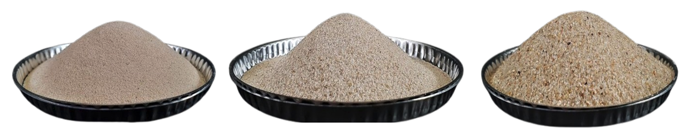
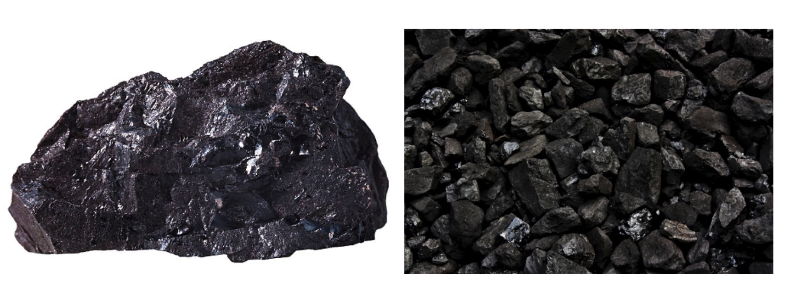
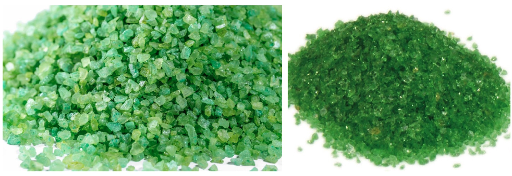
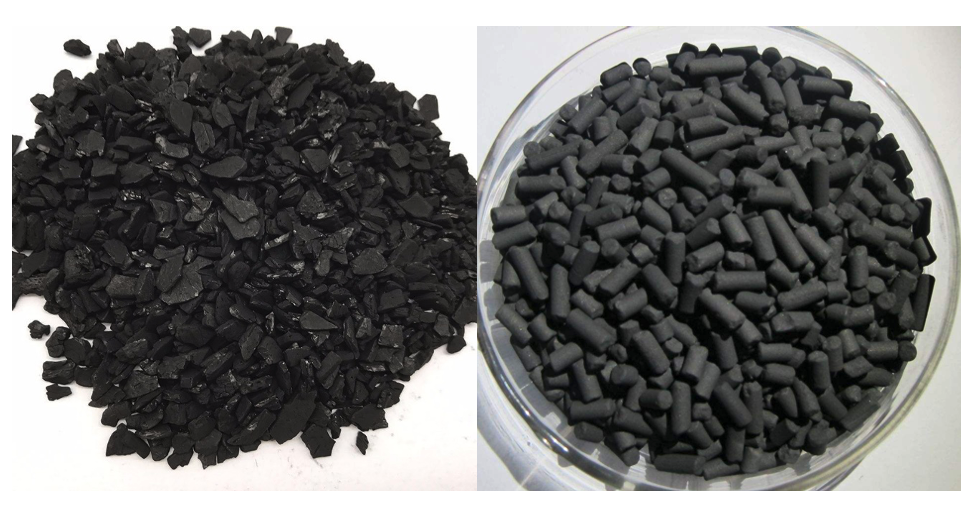
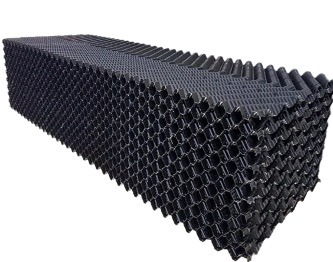
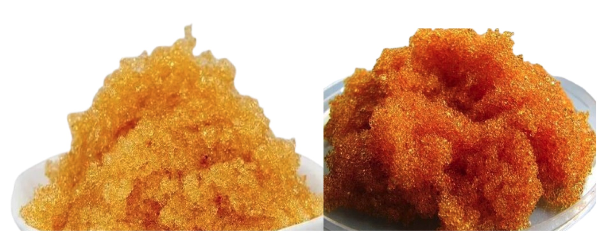
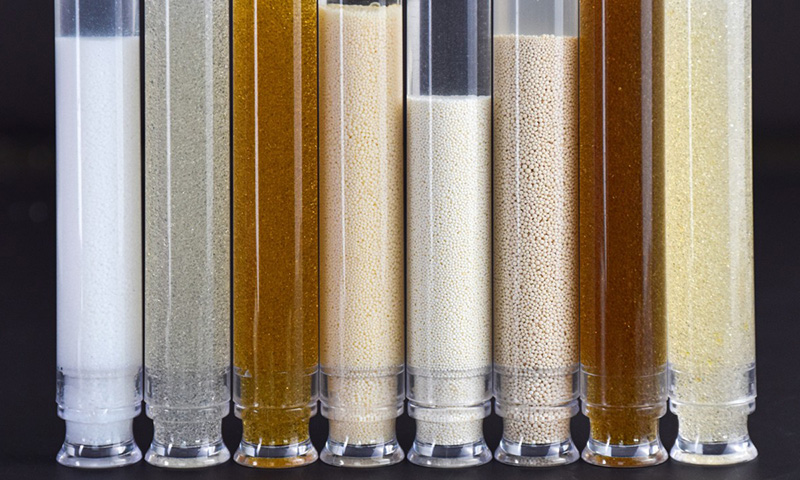

Premium filtration media including silica sand, anthracite, AFM glass, activated carbon, SAFF/MBBR biofilm carriers, and a full range of cation, anion, and mixed-bed ion exchange resins.

Genoasis supplies high-purity filtration media and ion exchange resins for pre-treatment, softening, iron removal, and full demineralization systems. Our graded silica sand, anthracite coal, and AFM glass media are processed to tight particle size specifications, ensuring predictable bed performance and optimised backwash characteristics.
Our ion exchange resin programme covers strongly acidic cation (SAC), strongly basic anion (SBA), weakly acidic cation (WAC), weakly basic anion (WBA), and mixed bed resins from leading manufacturers for softening, dealkalisation, and ultra-pure water production. SAFF and MBBR plastic biofilm carriers are also stocked for biological wastewater treatment upgrades.
High-purity quartz silica sand with SiO₂ content above 95%, available in grades from 0.3–0.6 mm up to 1.0–2.0 mm. Washed, dried, and screened to tight tolerances for consistent filtration bed performance.

Crushed and graded anthracite coal (0.8–2.0 mm) for use as the top layer in dual-media and multi-media filter beds. Lower density than sand allows deeper particle penetration and longer filtration runs before backwash.

Activated Filter Media (AFM) manufactured from recycled glass. Biologically resistant surface prevents biofilm formation, offering superior filtration to sand at equivalent bed depths with up to 30% energy savings.

Granular activated carbon (GAC) and powdered activated carbon (PAC) for chlorine, organics, taste, odour, and trace contaminant removal. Coal-based, coconut shell, and wood-based grades available for specific applications.

Plastic polyethylene biofilm carrier media for submerged aerated fixed film (SAFF) and moving bed biofilm reactor (MBBR) biological wastewater treatment systems. High surface area, buoyant in aerated tanks.

Food-grade and industrial-grade strongly acidic cation, strongly basic anion, and mixed bed resins for water softening, dealkalisation, deionisation, and ultra-pure water production. NSF certified grades available.
Every media type is stocked in multiple particle size grades and purity levels to match design specifications for single, dual, and multi-media filter configurations.
Key media and resin grades carry NSF/ANSI 61 certification for safe use in contact with drinking water, meeting the most stringent regulatory requirements.
Rigorous quality control and laboratory analysis certificates (CoA) provided with each batch, ensuring media purity, particle size distribution, and performance consistency.
Available in 25 kg bags, 1000 kg bulk bags (jumbo bags), and loose bulk delivery for large projects, with fast turnaround from our India and the Middle East distribution hubs.

Contact our team for pricing, availability, and technical specifications tailored to your requirements.